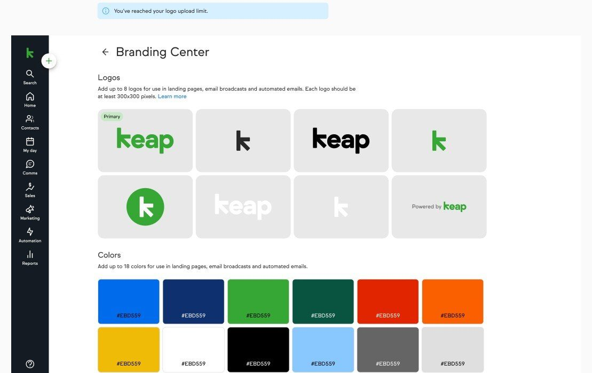
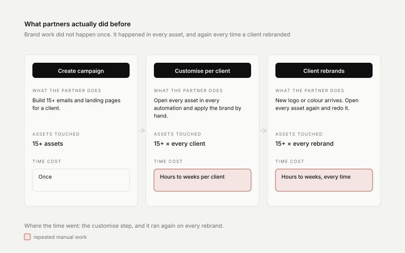
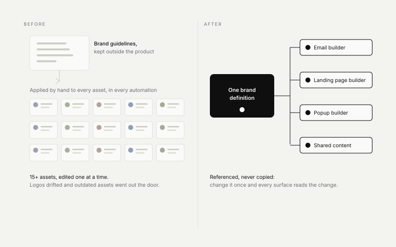
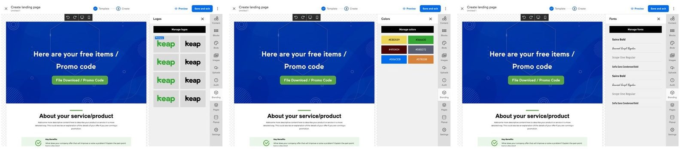
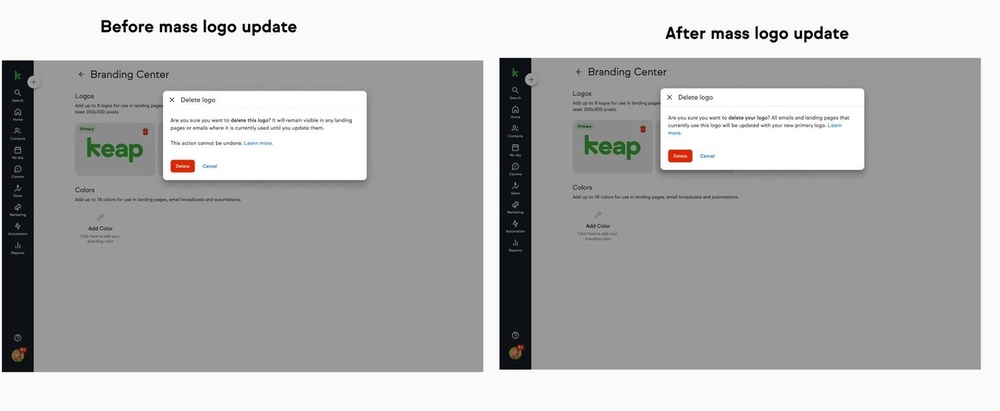
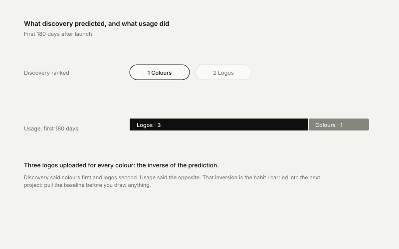

One definition,
every surface
A brand lived in a document kept outside the product, so a logo change became a scavenger hunt. I replaced it with one definition the system reads from, across four surfaces and sixteen dependent teams.

Product screens, captured from demo accounts.
A logo change should not be a scavenger hunt
Partners build campaigns for their clients: fifteen or more emails and landing pages in a single campaign. When a client sent a new logo or changed a button colour, the partner opened every asset in every automation and redid it by hand.
No way to apply a brand
Branding could not be applied to emails and landing pages effectively, so outdated assets and misused logos went out the door.
Hours to weeks, per client
Partners described the workaround as taking anywhere from a few hours to a few weeks for a single client app.
Shared content arrived unbranded
Campaigns distributed into a client’s own app carried nothing of that client’s brand with them.

Designer on the system, not just the screen
I owned the research and the information architecture, and carried the design across four teams and a builder we do not own.
Owned the research track
Thirteen participants in 45-minute one-to-one sessions: partners, onboarding coaches and end users. Then a five-platform competitor audit, then a concept test before anything got built.
Decided the system rules
Where brand assets live, what a “primary” logo means, and how one definition reaches every surface that renders it.
Carried it across sixteen dependent teams
Designer of record on the pitch connecting the Branding Center into a new landing page builder. The pitch listed sixteen dependent teams; my job was making one brand definition survive all of them without owning any of them.
Ran the cross-team workshop
Current state, future vision and two ideation blocks with the PM, tech leads, engineers and the content-sharing team sketching against the same board.

This was never a settings page
It is a distribution problem. So I wrote down what had to stay true on every surface, whoever renders it, and those three rules are why the rest of it held.
Reference, never copy
Assets are referenced rather than embedded, so changing one definition changes it everywhere it is used. That is the whole premise.
Exactly one primary
One logo is marked primary, and that is the one that travels when content is shared into somebody else’s app.
Degrade to a placeholder
A missing asset resolves to a placeholder, never to somebody else’s brand.

I also drew for the state the product would actually meet on day one rather than the happy path: accounts with no logo, and accounts whose existing profile logo disagreed with the new one. The second branch is the one that generates support tickets.
Keys, not IDs
Engineering proposed universal keys with a dependency-mapping table instead of raw IDs. It was the slower build, so I pushed for it. I could show that sharing scope would have to widen later, and that raw IDs would have closed that door. I won it on a design argument.

Three releases, and what usage corrected
